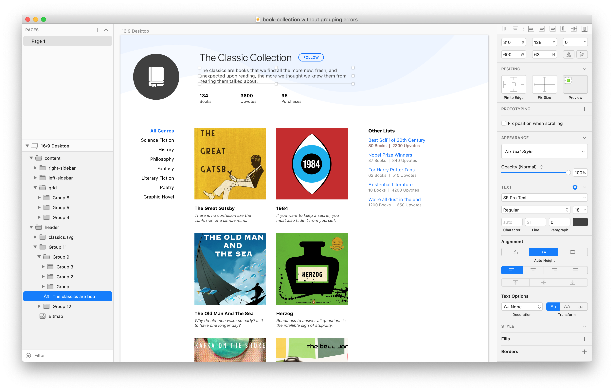
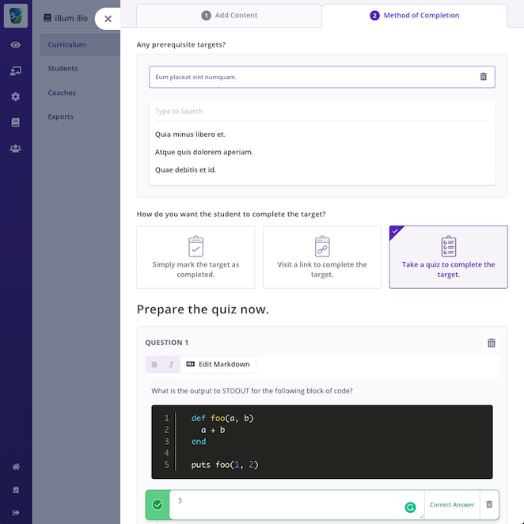
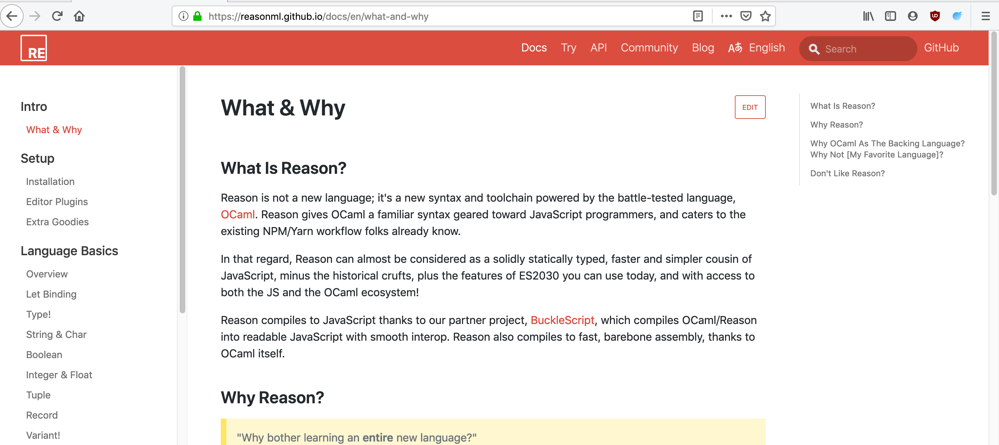
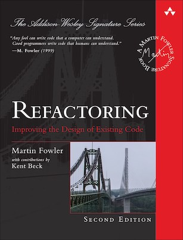

Learning to learn ReasonML
LEARNING TO LEARN REASONML
Jasim A Basheer
protoship.io
@jasim_ab


Protoship Teleport


Raw Vector Node


Reason is released
AUTHOR
Jordan Walke (and Cheng Lou and others)
WROTE
React, Reason, and ReasonReact
The Talk
- Reason: interesting bits
- How does it feel to program
- How to get started
Reason is OCaml
First released in 1990
C like speeds
ISWIM syntax (OCaml, Haskell) not ALGOL (C, Java, Javascript etc.)
What can we build with Reason/OCaml?
High-frequency trading software

World’s second largest crawler

Compilers
- First version of the Rust compiler
- Flow (typechecker for Javascript)
- Hack (Facebook’s PHP compiler)
Front-end web applications!
Compile Reason into clean performant Javascript
using the BuckleScript compiler


if (MomentRe.Moment.isSameWithGranularity(
MomentRe.momentNow(),
MomentRe.moment("2020-04-01"),
`day,
)) {
Js.log("It is the 1st of April!");
} else {
Js.log("A dreary day");
};// Generated by BUCKLESCRIPT VERSION 5.0.6, PLEASE EDIT WITH CARE
'use strict';
var Moment = require("moment");
var MomentRe = require("bs-moment/src/MomentRe.js");
if (Moment().isSame(MomentRe.moment(undefined, "2020-04-01"), "day")) {
console.log("It is the 1st of April!");
} else {
console.log("A dreary day");
}Javascript vs Reason
Javascript:
this, variable hoisting, prototypes, ES6 classes, objects, mutations, functions, modulesReason: functions, modules, types
Programming in Reason
Two principles:
- Write pure functions
- Get their types right
Perfection
The perfect computer program –
(a perfect program is) The one that does exactly what it should do, no more, no less, every time, with perfect reliability, and forever. The kind of perfection that you can get from mathematical definitions, which software is to a large extent, or from philosophical concepts.
“In search of software perfection”, by Dr. Xavier Leroy, author of OCaml
You will be user 17You will be user 1You will be user 1931You will be user NaNUncaught TypeError: Cannot read property 'id' of undefinedYou will be user 113type user = {
id: int
};
let showNext = u => {
Js.log("You will be user " ++ string_of_int(u.id + 1));
};
showNext({id: 15});You will be user 16type user = { id: int };
let showNext = u => {
Js.log("You will be user " ++ string_of_int(u.id + 1));
};
showNext({id: "abc"});
type user = { id: int };
let showNext = u => {
Js.log("You will be user " ++ string_of_int(u.id + 1));
};
showNext({id: "abc"});


type user = { id: int };
let showNext = u => {
Js.log("You will be user " ++ string_of_int(u.id + 1));
};
showNext({id: 44});
showNext({id: 299});
showNext({id: -44});You will be user 45
You will be user 300
You will be user -4
If it compiles, it works
if item == "tea"
pourCoffee()
else
pourTea()
Programming is difficult…
due to clerical errors.
Logical mistakes are rare!


Learning Reason
- Programming in the small
- variables, data structures, iteration, functions

Learning Reason
- Programming in the small
- variables, data structures, iteration, functions
- Tooling
- Programming in the large
- modules, packages
Refactoring (2nd edition)
by Martin Fowler

let plays = {
"hamlet": { "name": "Hamlet", "type": "tragedy" },
"as-like": { "name": "As You Like It", "type": "comedy" },
"othello": { "name": "Othello", "type": "tragedy" }
}
let invoices = [{
"customer": "BigCo",
"performances": [
{ "playID": "hamlet", "audience": 55 },
{ "playID": "as-like", "audience": 35 },
{ "playID": "othello", "audience": 40 }]
}];